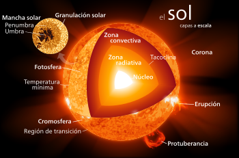

El Sol (del latín sol, solis, «dios Sol invictus» o «sol», Helios en la mitología griega, a su vez de la raíz protoindoeuropea sauel-, «brillar»)4 es una estrella de tipo-G de la secuencia principal y clase de luminosidad V que se encuentra en el centro del sistema solar y constituye la mayor fuente de radiación electromagnética de este sistema planetario.
Es una esfera casi perfecta de plasma, con un movimiento convectivo interno que genera un campo magnético a través de un proceso de dinamo. Cerca de tres cuartas partes de la masa del Sol constan de hidrógeno; el resto es principalmente helio, con cantidades mucho más pequeñas de elementos, incluyendo el oxígeno, carbono, neón y hierro.
Como toda estrella, el Sol posee una forma esférica, y a causa de su lento movimiento de rotación, tiene también un leve achatamiento polar. Como en cualquier cuerpo masivo, toda la materia que lo constituye es atraída hacia el centro del objeto por su propia fuerza gravitatoria. Sin embargo, el plasma que forma el Sol se encuentra en equilibrio, ya que la creciente presión en el interior solar compensa la atracción gravitatoria, lo que genera un equilibrio hidrostático.
| Astrologia | 3204439229 | @jeanparracabal1 |